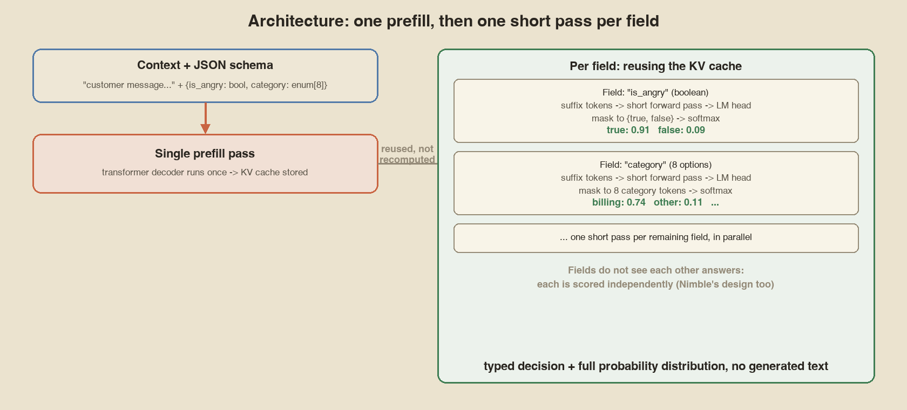

Summary: TypeSafe did not publish Jev's architecture. Three independent sources now explain the same mechanism: one prefill, then one cached pass per output field, scored over allowed tokens only. None of this is an official TypeSafe spec. It is a well evidenced reconstruction.
1. The three sources
Each source is independently checkable: a public post, a published model card, and an open GitHub repository with real benchmark numbers. None of them require taking anyone's word for it.
| Source | What it is | What it adds |
|---|---|---|
| Niels Rogge | Step by step explainer on X | Clear trace of one Jev call, field by field |
| Harsha Gundala | Qwen2.5-1B-RLCD on Hugging Face, technique named "Parallel Constrained Decoding" | Runnable code and a public benchmark. No new training needed |
| Bespoke Labs | Nimble, an open GitHub repo described as "an open Jev" | Training recipe, serving code, and a head to head number against Jev 1.13.0 |
Rogge and Gundala cover the inference mechanism. Bespoke Labs covers the training side. My earlier Jev article listed both as open gaps, specifically flagging that TypeSafe's launch post said only "details remain proprietary" about the architecture, and that the RLCD training objective's loss function and label source were undisclosed.
For the technique on its own, with full algorithm steps, complexity analysis, a schema specification and reference pseudocode, see the Parallel Constrained Decoding technical reference. This article focuses on the Jev specific evidence: who found what, and how well it fits what TypeSafe actually published.
None of the three sources below work for or were commissioned by TypeSafe. They are independent, outside reconstructions built by people with no special access to Jev's internals, working only from its published behavior and their own experiments.
2. What happens inside one Jev call
This is Niels Rogge's five step trace, built on Gundala's model. He posted it as a public explainer and said directly that his description is based on Qwen2.5-RLCD, which Harsha Gundala released, and that the goal is to replace autoregressive generation with a single decoder pass over the context plus schema, with per field scoring afterward.
- Single prefill. Context and JSON schema go through the transformer once. Keys and values are cached.
- Per field pass. Only that field's suffix tokens run through the decoder, reusing the cache. The expensive part, encoding the context, is never repeated.
- LM head. The final hidden state becomes logits over the whole vocabulary, the same output layer any model already has for predicting the next token.
- Mask and softmax. Keep only the logits for tokens that are valid answers for this field. Softmax them so they sum to 1, giving a real probability over just the allowed answers rather than the whole vocabulary.
- Pick the top token. Return it with the full probability distribution, not just the single chosen value.
The benefits Rogge calls out directly: it is fast, because the schema is never generated token by token, and it is always valid JSON, because the model never has the chance to emit a malformed key or broken syntax in the first place.

Compared with normal JSON generation
| Normal LLM JSON | Jev style scoring | |
|---|---|---|
| How output is made | Generated token by token | Chosen from allowed tokens |
| Forward passes | One per output token | One prefill plus short field passes |
| Malformed JSON possible | Yes | No, code builds the output |
| Returns probabilities | Not by default | Yes, per allowed answer |
3. The open proof of concept
Harsha Gundala released Qwen2.5-1B-RLCD with this description: any LLM can batch inference every key of a JSON at once and produce probabilities over a fixed set of categories. No new training is required.
That last point matters. The speedup comes from how the model is used, not from special weights. The release names its technique "Parallel Constrained Decoding": a single broadcast prefill of the context and schema, the KV cache shared across every field, logits sliced down to only each field's candidate tokens, and a calibrated softmax over that slice. Candidates whose text spans more than one token get an extra disambiguation step that reuses the same cache rather than starting over. None of this differs in substance from Rogge's five step trace. It is the same mechanism described with implementation level names.
Gundala frames the problem the same way the original Jev launch post does: standard structured generation needs somewhere between 150 and 500 sequential forward passes for a typical schema, with total latency scaling linearly in the number of output tokens. Parallel Constrained Decoding replaces that sum with one prefill plus independent per field scoring.
| Scenario (M4 Max) | Fields | Autoregressive | Parallel | Speedup |
|---|---|---|---|---|
| Fintech fraud routing | 4 | 420 ms | 75 ms | 5.6x |
| Code security audit | 4 | 380 ms | 68 ms | 5.6x |
| Tariff classification | 1 field, 255 choices | 500 ms | 89 ms | 5.6x |
| Support triage | 28 | 1,900 ms | 270 ms | 7.0x |
Every scenario reports 100% schema validity. The speedup grows with field count because the prefill is paid once.
4. How this explains Jev's numbers
| Jev claim | Mechanism that explains it |
|---|---|
| 70 to 500 ms latency | One prefill plus short parallel field passes, not hundreds of token steps |
| Free output tokens, $0.042 per million input tokens | Nothing is generated, so there are no output tokens to bill. Cost is purely a function of the context size that gets prefilled. |
| Cannot produce malformed JSON, the "0% hallucination" structural claim | Output space is a closed set of allowed tokens per field. Malformed output is not a category the scorer can select. |
| Latency stays low as schemas grow | Each extra field adds one small pass on top of a fixed prefill, instead of more sequential generation steps |
| No per customer fine tuning offered | Consistent with one shared set of weights, which is exactly what Nimble's architecture and the reference implementations also assume |
That last row connects back to this site's earlier Jev article, which flagged TypeSafe's documented answer to "how do I customize it" as entirely prompt side: put proprietary content in the state field, encode domain rules in each question's instructions, and decompose broad judgments into atomic questions combined in code. A scoring architecture like this one explains why that is the only customization surface on offer. There is no obvious place to plug in a customer specific adapter without retraining the shared weights.
How tight is the fit, really
The strength of this reconstruction is not any single matching number. It is that three unrelated parties, working independently and without access to Jev's internals, converged on the identical mechanism from three different directions: a plain-language explainer, a runnable open source model, and a full training recipe. If the real Jev architecture were meaningfully different, it would be a large coincidence for all three to land on the same description and for one of them, Nimble, to come within three points of Jev's own accuracy using it.
What this does not establish is Jev's exact size, its base model family, or whether TypeSafe's production serving stack differs from the single-machine MLX reference implementations discussed here. A company serving this at scale, across many concurrent requests and possibly many base model sizes per plan tier, could add batching, sharding or caching layers well beyond what a one-day open source project needs. The core per-request mechanism is the part this reconstruction speaks to, not TypeSafe's infrastructure around it.
5. Nimble: an open recipe
Nimble from Bespoke Labs shares data, training recipe and serving code. Its README says it did not distill from Jev.
- Base model: Qwen3.5-9B with LoRA fine tuning.
- Data: 2,676 training examples, 324 held out, across 10 domains.
- Serving:
ParallelScoreron Apple Silicon processes the shared context once and scores all fields in parallel, matching the cache sharing in Rogge's trace. A separate CUDA scorer scores each field with the full prompt each time, which means it skips the cache sharing optimization entirely on that code path, a detail that is easy to miss if you only read the Apple Silicon side of the repository. - Independence: fields cannot see each other's answers.
- Output shape: a flat schema of enum and boolean fields, each scored to a one token answer code, with the full logits and probabilities for every candidate returned alongside the chosen value, matching the shape of Jev's own output.
Nimble's README is explicit about scope and honesty: "we built Nimble in one day, so expect some rough edges," and its stated purpose is narrower than shipping a competitor to Jev. It exists to show how to curate the training data, how to train a model like this, and how to serve it, and to encourage further research, not to replace TypeSafe's product.
Accuracy on the held out set
| Model | Accuracy (324 examples) |
|---|---|
| Qwen3.5-9B base | 66.36% |
| Bespoke-Nimble-9B | 90.12% |
| Jev 1.13.0 | 93.21% |
- Fine tuning added 23.76 points over the base model.
- Jev still leads by 3.09 points on this in domain set, which is Bespoke Labs' own held out data, built for Nimble's own training domains, so the comparison favors Nimble somewhat by construction.
- Bespoke Labs also published a benchmark suite, credited to contributor Edgar Dyck, comparing Nimble and Jev on 13 public human labeled subsets neither model was tuned on. This is the fairer, out of domain test. See the repository's public benchmarks documentation for the per dataset results.
- The held out set itself is small, 324 examples, and limited to the ten domains Nimble was built for, such as commerce, education and media. Results should not be read as a general purpose accuracy comparison across arbitrary tasks.
6. Contrastive data curation
The mechanism explains speed. Accuracy comes from training data. Nimble builds pairs of examples that differ by one relevant fact, which flips the correct answer.
The pipeline has four checks:
- Confirm the decision rule can give different answers.
- Build an evidence pair with one controlled edit.
- Validate both examples with separate model calls.
- Generate labels only when every check passes.
Why it works: with ordinary examples a model can learn shortcuts such as phrasing or length. In a contrastive pair everything else is identical, so the only way to get both right is to find the deciding fact.
This is fully disclosed and reproducible, unlike TypeSafe's own RLCD, whose loss function and label sources are not public. The practical gain from this specific curation method is the 23.76 point jump from 66.36% to 90.12% on Nimble's own held out set, which, because it comes from only 2,676 training examples, suggests the deciding factor is the quality of the contrastive pairs rather than the sheer volume of data.
TypeSafe describes RLCD as targeting calibration specifically, training the model so that if it states 90% confidence on 100 answers, about 90 of them are actually correct. Nimble's contrastive curation targets something related but distinct: discrimination, making sure the model actually locates and uses the one fact that determines the right answer rather than a surface shortcut. Good calibration generally needs good discrimination as a prerequisite, since a model cannot be well calibrated about a decision it cannot reliably make, but whether TypeSafe's RLCD uses anything resembling contrastive pairs is not something this reconstruction can confirm.
7. Lineage: MiniCheck to Nimble
TypeSafe's credits name Greg Durrett and Liyan Tang's MiniCheck as work that "was two years early." Bespoke Labs built Bespoke-MiniCheck with them, and later built Nimble.
| Model | Year | Task | Result |
|---|---|---|---|
| MiniCheck | 2024 | Is a claim supported by a document | 770M parameter model near GPT-4 accuracy at about 400x lower cost |
| Bespoke-MiniCheck-7B | 2024 to 2025 | Same task, scaled up (InternLM2.5-7B base) | State of the art on LLM-AggreFact |
| Bespoke-Nimble-9B | 2026 | General typed decisions | 90.12% held out, about 3 points below Jev |
The common thread: a small model trained on the right contrastive or adversarial data can match a much larger model on a narrow question, at a fraction of the cost. MiniCheck proved this specifically for one task, checking whether a claim is backed by a document. Nimble is the same bet generalized to arbitrary flat schemas of boolean and enum decisions, which is a meaningfully broader claim, made by the same lab, two years apart.
TypeSafe's own launch credits list MiniCheck and Bespoke-MiniCheck by name as work that "was two years early and laid the foundations," alongside thanks to Niels Rogge for the decode explainer and Harsha Gundala for inspiring the effort. That a vendor's own public credits point directly at the lab that later built an open reproduction of its product is, on its own, a reasonable signal that the reconstruction in this article is pointed in the right direction.
8. Building one yourself
- Pick a base model that exposes raw logits. Any Hugging Face causal LM works, no special architecture needed.
- Use flat schemas with one token answers per field. Multi token answers break one shot scoring and need the extra disambiguation step.
- Prefill once and cache, then run one short pass per field.
- Slice logits to the field's token IDs, softmax, take the argmax.
- Fine tune with contrastive pairs if accuracy on your domain matters. Start without fine tuning first and measure, since Nimble's own base model scored 66.36% with zero training.
# Minimal shape of the pattern, following Rogge's five steps
kv_cache = model.prefill(context + schema_description)
for field in schema.fields:
logits = model.forward(field.suffix_tokens, cache=kv_cache)
sliced = logits[field.candidate_token_ids]
probs = softmax(sliced)
answer = field.candidates[argmax(probs)]Nimble is a working reference of exactly this recipe, with real data curation and serving code around it. Clone it, point it at your schema, and measure accuracy on your data before investing in your own training set. For the full algorithm, including the parts this summary skips, such as token tree disambiguation and the exact softmax formula, see the Parallel Constrained Decoding reference.
9. What is still genuinely unknown
It is worth listing these plainly, since a reconstruction this well evidenced can start to feel like confirmation.
| Question | Status |
|---|---|
| Jev's base model and parameter count | Undisclosed. No source here claims to know it. |
| Jev's exact RLCD loss function | Undisclosed. Nimble's contrastive method is a plausible analog, not a confirmed match. |
| Where RLCD's training labels come from | Undisclosed by TypeSafe. |
| Jev's production serving infrastructure | Undisclosed. May differ substantially from a single machine MLX reference implementation. |
| Whether Jev uses any additional, undisclosed technique beyond this mechanism | Unknown. The reconstruction explains the observed behavior well, which is not proof there is nothing else happening. |
10. Glossary
| Term | Meaning here |
|---|---|
| System One model | TypeSafe's name for a model category built for fast, typed, non-generative decisions rather than open ended text. |
| RLCD | TypeSafe's training objective name, Reinforcement Learning for Calibrated Decisions. Mechanics undisclosed. |
| Contrastive data curation | Nimble's training method: build pairs of near identical examples that differ by one fact, which flips the label. |
| Logit | A model's raw score for one vocabulary token, before softmax turns it into a probability. |
| LoRA | Low Rank Adaptation, a lightweight fine tuning method used to train Bespoke-Nimble-9B on top of Qwen3.5-9B. |
FAQ
Is Nimble the same model as Jev?
No. Bespoke Labs states it did not distill from Jev. Nimble is an independent build of the same approach on Qwen3.5-9B with its own data.
Is RLCD the same as contrastive data curation?
Not confirmed. TypeSafe says RLCD targets calibration. Nimble's method targets discrimination. They are related but TypeSafe has not published RLCD's loss, so this cannot be checked.
Can I run this today?
Yes. Gundala's model runs with MLX on Apple Silicon. Nimble runs on Apple Silicon and NVIDIA GPUs and includes the training data and recipe.
Why does Nimble's README say it was built in one day?
Bespoke Labs states this directly, as a disclaimer about rough edges, not a boast. It matters for how to read the comparison: a one-day build reaching within three points of Jev's accuracy says the core recipe is sound and reproducible, not that Nimble is a polished, production-hardened competitor.
Does this reconstruction prove TypeSafe copied an open source project?
No, and the evidence points the other way. TypeSafe's own public credits predate Nimble and name MiniCheck, from the same lab, as prior foundational work. The direction of influence the evidence supports is MiniCheck influencing Jev, with Nimble arriving afterward as an independent open reproduction inspired by Jev's publicly observed behavior.
If I just need fast structured output, should I use Jev or build my own with Nimble?
That depends on your constraints, not on which is "better" in the abstract. Jev is a hosted, versioned, supported product with published pricing and rate limits. Nimble is a self hosted, fully inspectable recipe you train and operate yourself. Pick Jev if you want a managed API, pick the Nimble approach if you need to run on your own infrastructure, your own data never leaving your control, or a model fine tuned specifically on your domain.
Takeaways
- The mechanism is one prefill, then cached per field passes, masked and softmaxed, confirmed independently by three unrelated sources.
- It works on a stock model with no special training. Training adds accuracy and calibration on top of a mechanism that already functions without it.
- Nimble is the most complete open evidence: data, recipe, code, and a direct Jev comparison, landing within three points of Jev 1.13.0 on held out data.
- Contrastive data curation is a fully disclosed, reproducible training method that stands on its own, independent of whether it matches TypeSafe's undisclosed RLCD exactly.
- The lineage from MiniCheck (2024) to Bespoke-MiniCheck to Nimble runs through one lab, and TypeSafe's own launch credits name that earlier work directly.
- Still unknown: Jev's exact base model, parameter count, RLCD training mechanics, and production serving infrastructure. Treat this entire piece as a well evidenced reconstruction, not an official specification.
11. Timeline
| When | What happened |
|---|---|
| 2024 (EMNLP) | MiniCheck published by Tang, Laban and Durrett: a small fact checking model matching GPT-4 accuracy at roughly 400x lower cost |
| 2024 to 2025 | Bespoke-MiniCheck-7B released by Bespoke Labs, built on the MiniCheck authors' work, scaled up and state of the art on LLM-AggreFact |
| 2026, Jev launch | TypeSafe announces System One Models and Jev, crediting MiniCheck and thanking Niels Rogge and Harsha Gundala in its launch material |
| Days after launch | Harsha Gundala releases Qwen2.5-1B-RLCD, an open proof of concept needing no new training |
| Shortly after | Niels Rogge publishes a visual, step by step explainer of the mechanism, built on Gundala's release |
| Following weeks | Bespoke Labs releases Nimble, a full open data, training and serving recipe, benchmarked directly against Jev 1.13.0 |
References
Primary sources for every claim, quote and number in this reconstruction:
- Niels Rogge, how Jev works Source for the five step trace.
- Harsha Gundala, release announcement Open proof of concept.
- Qwen-2.5-1B-RLCD on Hugging Face Model card and benchmark table.
- bespokelabsai/nimble Data, training recipe and serving code.
- Bespoke-Nimble-9B The trained model.
- MiniCheck: Efficient Fact-Checking of LLMs on Grounding Documents Tang, Laban and Durrett, EMNLP 2024.
- Bespoke-MiniCheck-7B Follow on model from Bespoke Labs.
- System One Models and Jev The original technical read.
- Parallel Constrained Decoding: A Technical Reference The technique in full.